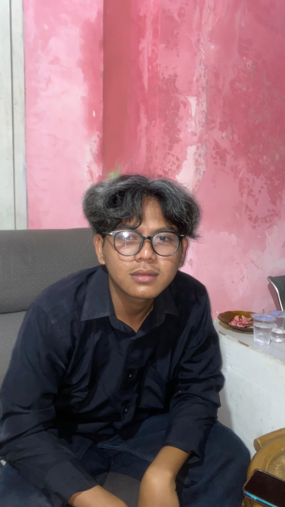

Engineer.
Creator.
Designer.
Seorang mahasiswa Teknik yang tidak berhenti di hasil akhir — selalu menggali "mengapa" sebuah sistem dapat bekerja. Membangun dari logika terdalam, cross-disciplinary: dari Java hingga arsitektur terdistribusi, dari elektronika hingga riset ilmiah.
Keahlian
Domain & Teknologi

Approach
Selalu bertanya "mengapa", bukan hanya "bagaimana".
Pendekatan belajar yang digunakan tidak berhenti di hasil akhir. Setiap sistem, rangkaian, atau baris kode dibedah sampai ke lapisan terdalam — memahami mekanisme yang membuatnya bekerja, bukan sekadar menggunakannya.
Latar belakang yang membentang dari ilmu komputer, jaringan, pengembangan web, hingga teknik energi terbarukan, menciptakan pola pikir seorang engineer sejati: sistematis, cross-disciplinary, dan selalu mencari struktur paling rapi di balik kompleksitas.
Ada ketertarikan kuat pada dokumentasi yang sistematis, kode yang clean, dan bagaimana teknologi dapat secara langsung membantu serta memvalidasi sisi emosional manusia — bukan hanya menyelesaikan masalah teknis.
Karya Pilihan
Proyek & Riset
password_hash() dan Git terintegrasi via CLI.
Terhubung
Mulai Percakapan
Terbuka untuk kolaborasi proyek, diskusi teknis, riset bersama, atau sekadar bertukar perspektif tentang sistem dan teknologi.